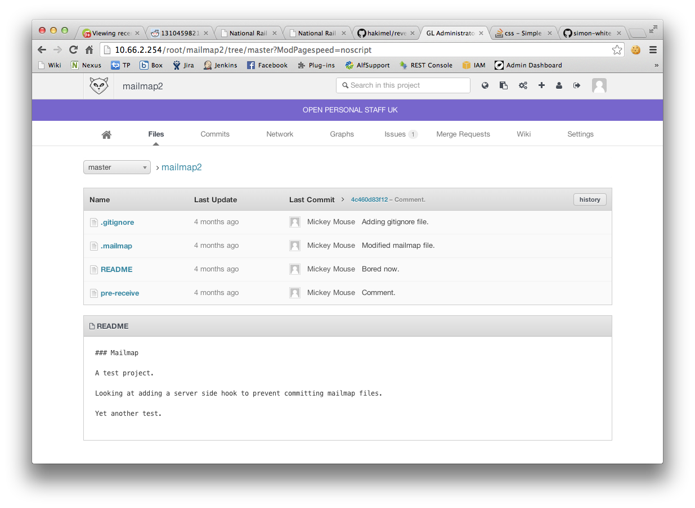
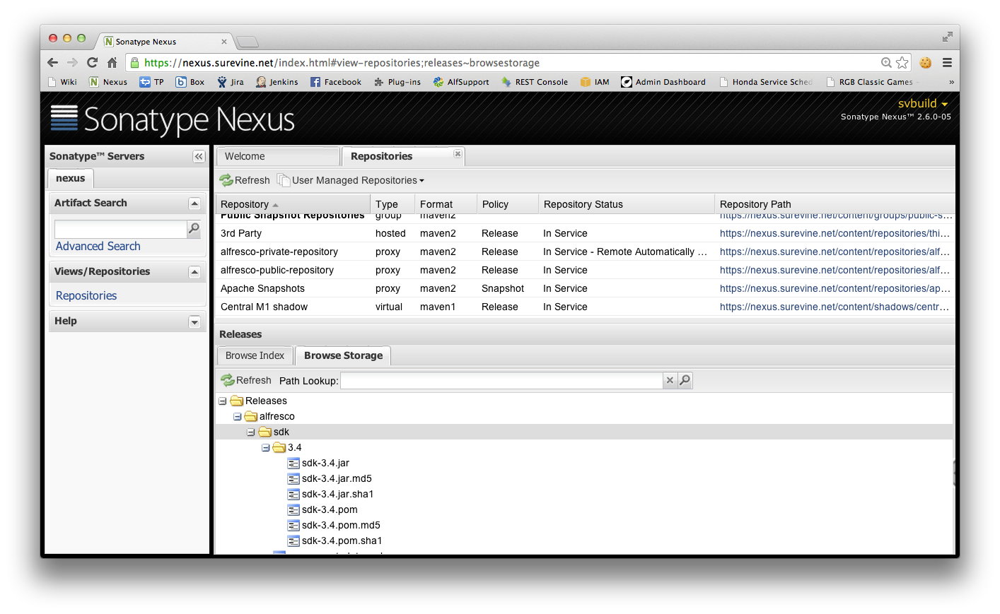

Community Portal
Surevine's Open Source Solutions in the Public Sector
Created by @surevine
Who?
@surevine
github.com/surevine
@simon_m_white
github.com/simon-white
sid: smwhit1
What?
What is Community Portal?
- An effort to work better and more closely with our partners
- Focused on software development software
So what are you providing?
- Business and policy change
- Collaborative development & Community tools
Why?
Why do we need this?
- Workbook vs. resources
- Huge untapped potential in the partner community
- Existing methods of exploiting this community are... clunky
How?
What are we doing today?
- Secure source code management with Gitlab
- Federated release management with Nexus
- Initial people-oriented features
Gitlab SCM
Row Level Security

Nexus Release Management
